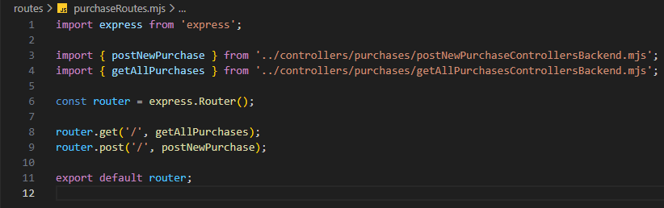

Vásárlás kezelése - purchaseRoutes.mjs
Vásárlás kezelése - purchaseRoutes.mjs

Ebben a részben szerkesztjük a routes mappában a purchaseRoutes.mjs állományt, amelyben összesítjük a CRUD műveletekhez tartozó logikákat.
-
Szerkesszük a
purchaseRoutes.mjsállományunkat.-
import express from 'express';- azexpressnpmcsomag beimportálása. -
import { postNewPurchase } from '../controllers/purchases/postNewPurchaseControllersBackend.mjs';- apostNewPurchasefüggvény nevesített importja. -
import { getAllPurchases } from '../controllers/purchases/getAllPurchasesControllersBackend.mjs';- agetAllPurchasesfüggvény nevesített importja. -
const router = express.Router();- mivel a webszerver jelölésére azappcsak aserver.mjsállományban használható, ezért itt már csak arouterszóval hivatkozhatunk rá, amit azexpressobjektumRouter()függvényével tehetünk meg. -
router.get('/', getAllPurchases);- ahttp GET metódus-hoz tartozó logika hívása agetAllPurchasesfüggvény segítségével. -
router.post('/', postNewPurchase);- ahttp POST metódus-hoz tartozó logika hívása apostNewPurchasefüggvény segítségével. -
export default router;- a szerver hívás alapértelmezett kivitele.
-